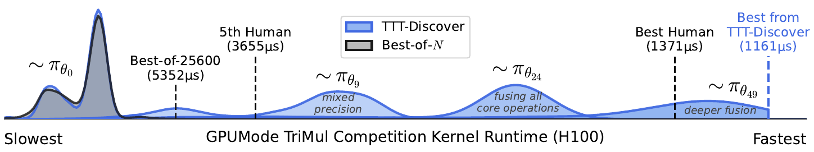
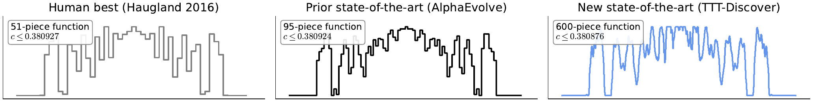
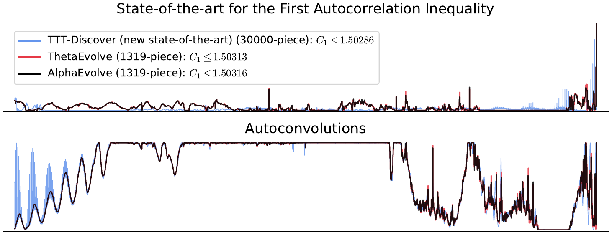
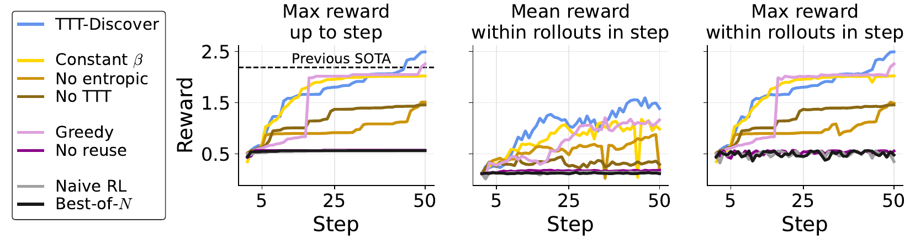

An interactive explainer
Learning to Discover at Test Time
AlphaEvolve made headlines using AI to push the frontier of open math problems. But look at how it works: it prompts a frozen language model thousands of times and keeps the lucky guesses. The model itself never learns a thing. TTT-Discover asks a sharper question — what if the model trained on the problem while solving it? That one change, turning test-time search into test-time learning, beats AlphaEvolve on the Erdős minimum overlap problem by a margin 16× larger than AlphaEvolve's own improvement, makes a GPU kernel 2× faster than the best human expert, and would have won past AtCoder contests — all with an open 120B model, for about $500 a problem.

Suppose you want to use AI to make a discovery — to find a faster algorithm, a tighter mathematical bound, a better GPU kernel than anything that currently exists. By definition, that answer is not in the model's training data. It is not in anyone's training data. So the model has to do something genuinely hard: produce an idea that is new to the world.
The dominant recipe for this, popularized by DeepMind's AlphaEvolve, is test-time search. Keep a frozen language model. Prompt it thousands of times. Store the attempts in a buffer, and use hand-crafted, domain-specific heuristics — mutation, crossover, fitness — to assemble the next prompt from the best ones so far. It works, and it has produced real results. But notice what is missing: the model never improves. It is a student who reads the textbook, keeps guessing at the hard problem, occasionally guesses well — and never internalizes a single new idea.
The most direct way for anything to get better is to learn. And across the history of AI, for the hardest problems — Go, protein folding — learning has eventually superseded search. So TTT-Discover does the obvious-in-hindsight thing: it keeps training the model, on the very problem it is trying to solve. The problem is hard because it is out-of-distribution; but the model's own attempts at it are a data distribution that is finally, exactly, about this problem.
The catch is that doing this naïvely — "just run reinforcement learning" — quietly optimizes for the wrong thing. The rest of this piece is about the two small, sharp design choices that fix that, and the discoveries they unlocked.
1. Search, or learning?
To be precise about the difference, the paper casts every scientific problem as an environment — a Markov decision process. A problem arrives as a text description $d$. A state $s$ is a candidate solution: a Triton kernel, a step function, a C++ program. An action $a$ is what the model emits — some thinking tokens followed by code. The transition runs or parses that code into the next state $s'$. And a reward $R(s)\in\mathbb{R}$ scores it: the inverse runtime of a kernel, the bound a construction certifies, a competition score, $1/\text{MSE}$ — and exactly zero if the solution fails its validity checks.
Write $\ssota$ for the best solution anyone has so far, and $\rsota = R(\ssota)$ for its reward. Then the goal has a one-line definition:
$$\textbf{Discovery:}\quad \text{find a state } s \text{ with } R(s) > \rsota.$$
The larger the gap $R(s) - \rsota$, the more significant the discovery. Every method in the paper — baselines included — is just a different way of searching this environment for such a state.
There is a ladder of those methods, and all of them keep the model's weights $\theta$ frozen. The simplest, Best-of-$N$, draws $N$ independent samples from the policy and keeps the best. State reuse adds a buffer $\mathcal{H}$ of past solutions and warm-starts each new attempt from a promising one — and because reusing a solution means the model is editing it rather than starting over, each reuse quietly adds another timestep to the trajectory. State-action reuse — what AlphaEvolve calls evolutionary search — goes further, feeding past attempts back as natural-language context and steering the buffer with elaborate hand-built heuristics.
TTT-Discover keeps that whole loop and changes one line. After each attempt is scored and filed in the buffer, the policy takes a gradient step on its own experience — the buffer of attempts has quietly become a training set.
2. Why standard RL is the wrong tool
Once you frame discovery as an environment, the next move looks obvious: reach for reinforcement learning. The environment is a single problem; run PPO or GRPO on it; maximize expected reward. This is the natural baseline — and it underperforms badly, because a discovery problem is not a standard RL problem. Two differences matter.
First, the policy only has to solve this one problem — it never needs to generalize to others. Second, and stranger: you only need one great solution. The policy is not the prize; it is scaffolding. In ordinary RL the policy is the artifact, and the goal is high reward on average, across many deployments. In discovery there is no deployment. A policy can be terrible on average and still be a triumph, as long as it stumbles onto a new record once.
Ignore those differences and naïve RL springs three leaks:
The objective optimizes the average, not the maximum
Expected-reward RL is indifferent to records. Suppose the best known kernel runs in $2000\,\mu s$. A kernel at $1900\,\mu s$ would be a genuine breakthrough; a kernel at $1990\,\mu s$ is a rounding error. To an objective that averages reward, those two attempts look almost identical — both are "slightly better than typical." The signal that should scream discovery is averaged into silence.
The horizon is too short
Start every attempt from a blank page and you cap how far any single attempt can reach. Reusing a previous solution effectively grants extra timesteps — the model refines instead of restarting — so genuinely complex solutions can accrete over many steps. Naïve RL, with its fixed start-from-scratch distribution, throws that away.
Exploration collapses
Chasing expected reward, a policy learns to play it safe: reliable, decent actions beat risky ones, even though it is precisely the risky actions that might land a discovery. And at the buffer level, naïvely always reusing the current best over-exploits a handful of states and starves the search of diversity.
So TTT-Discover changes exactly two things — the objective and the reuse rule. The next two sections are those two changes.
3. The entropic objective
The fix for leak one is to stop maximizing the average reward and maximize a soft maximum instead. This is the entropic objective:
$$J_\beta(\theta)\;=\;\mathbb{E}_{\,s\,\sim\,\texttt{reuse}(\mathcal{H})}\Big[\;\log\;\mathbb{E}_{\,a\,\sim\,\pi_\theta(\cdot\mid s)}\big[\,e^{\beta(s)\,R(s,a)}\,\big]\;\Big]$$
The inner $\log\mathbb{E}\,e^{\beta R}$ is a log-sum-exp — a knob-controlled blend of the mean and the max. The knob is $\beta$. As $\beta \to 0$, the objective collapses to the ordinary expected reward $\mathbb{E}[R]$. As $\beta \to \infty$, it tends to the plain $\max R$. In between, $\beta$ dials smoothly from "I want all my attempts to be good on average" to "I only care about my single best attempt" — which, for a discovery problem, is exactly the thing you actually care about.
Differentiate it and the policy gradient survives almost unchanged — it is still $\mathbb{E}[\,w(a)\,\nabla_\theta\log\pi_\theta(a\mid s)\,]$ — but the per-attempt weight is no longer uniform:
$$w_{\beta}(a)\;=\;\frac{e^{\beta R(s,a)}}{\mathbb{E}_{a'\sim\pi_\theta}\!\big[e^{\beta R(s,a')}\big]}\,,\qquad A(a)\;=\;\underbrace{w_{\beta}(a)-1}_{\text{entropic advantage}}\;-\;\lambda\,\log\frac{\pi_\theta(a\mid s)}{\pi_{\theta_0}(a\mid s)}$$
At $\beta=0$ every weight is $1$ — that is plain RL, every rollout pulled on equally. As $\beta$ grows, the weight piles onto the top rollouts, and the gradient learns to imitate the rare great attempts and ignore the merely average ones. (The $-1$ is a free baseline, since the weights average to $1$; the last term is a KL leash back to the base model $\pi_{\theta_0}$.)
Which leaves the real question: what should $\beta$ be? A constant is brittle. Too large early in training and the updates are unstable — one outlier dominates the batch. Too small late in training, when every remaining improvement is tiny, and the advantages all vanish toward zero. The paper's answer is to set $\beta$ adaptively, per state, by spending a fixed information budget. Define the tilted distribution $q_\beta \propto \pi_\theta\, e^{\beta R}$ — the weights above are exactly $q_\beta/\pi_\theta$ — and turn $\beta$ up only until it pulls $q_\beta$ a fixed distance from the current policy:
$$\text{pick }\beta(s)\ \text{ so that }\ \KL\big(q_{\beta(s)}\;\|\;\pi_\theta\big)\;=\;\gamma\,,\qquad \gamma=\ln 2.$$
On a batch of rollouts this is a one-line bisection search. And it self-tunes in a satisfying way: a state where every attempt scores about the same lets $\beta$ climb high (chase hard — it is safe to); a state where one attempt hit a jackpot forces $\beta$ low (so a single lucky outlier cannot hijack the update). It is even invariant to rescaling the reward. Slide $\beta$ below and watch the gradient's attention sharpen from a flat average onto the best attempts.
4. PUCT: what to build on
The objective fixes how the model learns from a batch. The reuse rule fixes the other two leaks — horizon and exploration — by answering a different question: of all the solutions in the buffer, which one do you hand the model to build on next?
TTT-Discover borrows the selection rule from AlphaZero — PUCT — and points it at the archive $\mathcal{H}$ of every solution found so far. Each state $s$ gets a score:
$$\operatorname{score}(s)\;=\;\underbrace{Q(s)}_{\text{exploit}}\;+\;\underbrace{c\cdot\text{scale}\cdot P(s)\cdot\frac{\sqrt{1+T}}{1+n(s)}}_{\text{explore}}$$
The first term is exploitation: $Q(s)$ is the best reward ever reached by building on $s$. Not the average — and that is a deliberate break from AlphaZero, which averages over a state's outcomes. What matters for a discovery is the best result reachable from a state, not the typical one. A single brilliant descendant should make its parent attractive, even if every other descendant flopped.
The second term is exploration. $P(s)$ is a prior favoring high-reward states — a rank-based prior encoding a simple bet: a fast kernel is more likely to seed an even faster one than a slow kernel is. The $\sqrt{1+T}/(1+n(s))$ factor is the curiosity bonus: it decays as a state $s$ (and its descendants) gets expanded $n(s)$ times, so the search keeps drifting back to under-visited candidates instead of grinding one lineage forever. The coefficient $c$ sets the balance.
This is what extends the horizon — every reuse is another timestep on a solution's trajectory — and what keeps exploration alive at the buffer level. Slide $c$ in the widget: at $c=0$ the search fixates on whatever currently looks best; turn $c$ up and it spreads its bets and tends to find more.
5. The full recipe
That is the whole method. The loop is the familiar search loop; the two new pieces are
train — an entropic-objective gradient step — and reuse — PUCT over the
buffer.
H ← { (∅, R(∅)) } # buffer, seeded with the trivial solution
for i = 0 … N−1:
s, c ← PUCT(H) # reuse: pick a state to build on
a ← π_θ( · | d, s, c) # the policy proposes thinking tokens + code
s′ ← T(a) # run / parse the code → a new candidate
r ← R(s′) # score it against the environment
H ← H ∪ { (s, a, s′, r) } # file the attempt in the buffer
θ ← θ + η · ∇ J_β(θ) # train: one entropic gradient step
return the s′ with the highest reward r ever seenThe animation below is that loop running on the GPUMode TriMul kernel competition. Each step draws 512 solutions; their reward distribution is the curve. As the policy trains, the distribution does not just grow a lucky tail — the whole thing shifts right, sharpens, and crosses the best human. A frozen model handed the identical sampling budget stays exactly where it started.
The reward distribution of 512 attempts per step, marching past the best-human line over 50 steps of test-time training. Search keeps the model still; learning moves it.
The implementation is deliberately unglamorous. The model is gpt-oss-120b — an open 120B model — fine-tuned with a rank-32 LoRA adapter through Tinker, Thinking Machines' training API. A run is 50 steps; each step samples 512 rollouts (8 groups of 64, every group sharing one PUCT-selected state) and takes a single gradient step. No reward shaping, no task-specific schedule, no human in the optimization loop. Total cost: around $500 per problem. AlphaEvolve's headline results, by contrast, leaned on closed Gemini frontier models.
6. The discoveries
The authors report every problem they attempted — across mathematics, GPU kernels, competitive programming, and biology — and TTT-Discover set a new state of the art in almost all of them.
| Domain | Benchmark | TTT-Discover | Best prior result |
|---|---|---|---|
| Mathematics | Erdős minimum overlap (↓) | 0.380876 | 0.380924 (AlphaEvolve) |
| GPU kernels | TriMul, A100 (↓) | 2198 μs | 4531 μs (best human) |
| TriMul, H100 (↓) | 1161 μs | 1371 μs (best human) | |
| Algorithms | AtCoder AHC039 (↑) | 567,062 | 566,997 (best human) |
| Biology | Single-cell denoising (↑) | 0.71 | 0.64 (MAGIC, best human) |
Headline results from Figure 1 of the paper. All achieved with the open gpt-oss-120b model.
Mathematics: a 70-year-old problem, an asymmetric answer
The Erdős minimum overlap problem, posed in 1955, asks you to split $\{1,\dots,2n\}$ into two equal halves so as to minimize the worst-case overlap of their difference sets, and to pin down the limiting constant $c$. You certify an upper bound by constructing a step function. The best human bound stood at $0.380927$; AlphaEvolve, with frontier models, nudged it to $0.380924$. TTT-Discover reached 0.380876 — an improvement 16× larger than AlphaEvolve's improvement over the previous record. Its construction is also qualitatively different: a 600-piece asymmetric step function, where every prior solution had been symmetric.

On the first autocorrelation inequality the story repeats: a new bound $C_1 \le 1.50286$ from a 30,000-piece construction, found from scratch, beating the concurrent ThetaEvolve's 1,319-piece refinement. What is striking is the trajectory of the discovery — visible in the buffer as the model trained. Early gains came from gradient descent; the next from switching to linear programming; the record-setting steps from a heuristic the model invented itself, focusing optimization only on the constraints that were nearly tight. The authors note they never once intervened in that process. Equally honestly, they report a problem where it did not work — the second autocorrelation inequality — where TTT-Discover fell just short of AlphaEvolve. And a control worth noting: swapped onto the much weaker Qwen3-8B, TTT-Discover still out-discovered the concurrent ThetaEvolve — which ran a stronger model variant and a larger sampling budget.

GPU kernels: 2× faster than the best human expert
The TriMul task — triangular matrix multiplication, a core primitive in AlphaFold — is a live GPUMode competition with leaderboards full of expert submissions. TTT-Discover, trained against H100 runtime alone, produced kernels that took the top spot on every GPU: A100, H100, B200, and AMD's MI300X — uniformly more than 15% faster than the best human, and on the A100 a full 2× faster.
| TriMul kernel (↓, μs) | A100 | H100 | B200 | MI300X |
|---|---|---|---|---|
| Best human | 4531 | 1371 | 1039 | 2516 |
| Best-of-25600 | 9220 | 5390 | 3255 | 4902 |
| TTT-Discover | 2198 | 1161 | 914 | 1556 |
Table 4 of the paper. Best-of-25600 uses the same model and sampling budget as TTT-Discover, but never trains.
The kernels are not magic — they are good engineering, found automatically. TTT-Discover correctly diagnosed TriMul as memory-bound: a chain of small elementwise operations, each paying a round-trip to slow GPU memory. So its kernels fuse those operations — the input LayerNorm, the sigmoid gating, the output LayerNorm and gating — collapsing many memory round-trips into one. For the one genuinely compute-heavy step, the $O(N^3)$ matmul, they cast to FP16 and hand it to cuBLAS to ride the TensorCores.
Toggle the optimizations below and watch the runtime fall — you need every one of them to clear the human line.
The remaining domains round out the picture. On two past AtCoder heuristic contests — a geometry problem and a scheduling problem — TTT-Discover's programs would have placed first in both, ahead of every human and of AI systems built on Gemini and GPT ensembles. On a single-cell RNA denoising benchmark it lifted the score from 0.64 to 0.71, though here the authors add a careful disclaimer: a benchmark metric is not the same thing as biological truth.
7. Why it works
The cleanest evidence is the ablation. On the TriMul competition, the authors knocked out one piece of TTT-Discover at a time. Read the table from the bottom up — it is a short, sharp story.
| Configuration | train | reuse | Best runtime (↓, μs) |
|---|---|---|---|
| Best human kernel | — | — | 1371 |
| TTT-Discover | entropic, adaptive β | PUCT | 1203 |
| − adaptive β | entropic, constant β | PUCT | 1484 |
| − entropic objective | expected reward | PUCT | 1986 |
| − learning | no training | PUCT | 2061 |
| − PUCT | entropic, adaptive β | ε-greedy | 1329 |
| − reuse | entropic, adaptive β | none | 5274 |
| Naïve test-time RL | expected reward | none | 5329 |
| Best-of-N | no training | none | 5352 |
Table 5 of the paper — best kernel runtime on H100 per ablation, all matched to the same sampling budget.
Reuse is the engine
Look at what happens when you remove reuse: every method collapses to roughly $5300\,\mu s$ — nowhere near the $1371\,\mu s$ human, regardless of how cleverly it trains. With no buffer to build on, the horizon is one attempt long, and one attempt is simply not enough room to construct a kernel this good. Reuse is what lets a solution accrete over dozens of timesteps. It is the single load-bearing component.
The entropic objective is what makes learning bite
Reuse alone is not enough either. With PUCT but no training at all, you get $2061\,\mu s$ — still behind the human. Add training, but with the ordinary expected-reward objective, and you reach only $1986\,\mu s$: a policy averaging its rewards barely notices the rare great kernels. Swap in the entropic objective and the run finally clears the human line at $1203\,\mu s$. The objective is what converts "the model is learning" into "the model is learning the right thing."
The whole distribution moves
Best-of-25600 — the same model, the same total budget, no learning — never gets close. And the reward distributions show why this is not luck: TTT-Discover does not merely grow a fortunate tail, it drags the entire distribution upward, step after step. The model is genuinely getting better at the problem.

8. What it means
The quiet claim in this paper is a shift in where the leverage lives. The reigning recipe for AI-driven discovery treats the language model as a fixed oracle and gets ever more clever about how to prompt it. TTT-Discover treats the problem itself as a tiny, bespoke training set, and gets the model to learn from it. The loop and the budget are nearly the same; the difference is whether the model is allowed to change.
And it turns out that, for these problems, the model is where the leverage was hiding. An open 120B model, for a few hundred dollars, beat systems built on closed frontier models — not because it is a better model, but because it was trained on the one problem that mattered. Search scales with compute; so does learning; but on the hardest problems, learning has a way of winning.
Open problems
- Continuous rewards only. The entropic objective needs a graded reward signal — a runtime, a bound, a score. Problems with sparse or binary rewards, or non-verifiable goals, are out of reach for now. The authors call this the most important direction for future work.
- You pay per problem. The trained policy is scaffolding, not a deliverable — it does not transfer. Every new problem is a fresh $500 run. Cheap for a research result; an open question at the scale of "discovery as a service."
- Benchmarks are not the world. The biology result comes with the authors' own warning: optimizing a denoising metric is not the same as advancing biology. A reward function is a proxy, and a learner this determined will exploit every gap between the proxy and the goal.
The bottom line
A hard problem is hard because it lies outside what the model already knows. The reflex is to search harder around a frozen model. TTT-Discover's answer is simpler and, in hindsight, more obvious: let the model's own attempts at the problem become its training data, design the objective to chase records rather than averages, and the reuse rule to keep building. The result is not a smarter model — it is the same model, briefly, deliberately, taught one new thing.